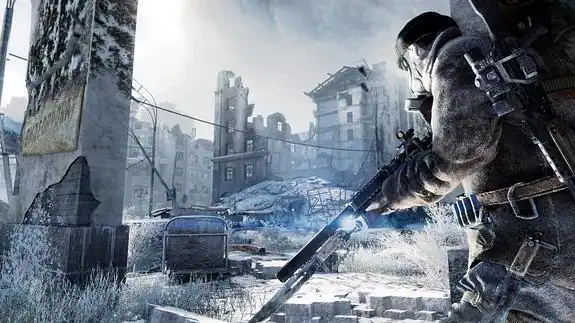

Juegos posapocalípticos


METRO 2033
FALLOUT 4
THE LAST OF US
Metro 2033 es un videojuego de disparos en primera persona desarrollado por 4A Games y lanzado en 2010. Está basado en la novela del mismo nombre escrita por Dmitry Glukhovsky. El juego se desarrolla en un mundo postapocalíptico en el año 2033, después de un evento catastrófico que dejó la Tierra devastada y obligó a los sobrevivientes a refugiarse en el sistema de metro de Moscú para escapar de las criaturas mutantes y las condiciones ambientales peligrosas.
Fallout 4 es un juego de rol de acción desarrollado por Bethesda Game Studios y lanzado en 2015. Es la cuarta entrega principal de la serie Fallout y se desarrolla en un mundo postapocalíptico.
The Last of Us es un videojuego de acción y aventuras desarrollado por Naughty Dog y lanzado en 2013 para la consola PlayStation 3, y posteriormente remasterizado para PlayStation 4. Es conocido por su narrativa emocional, personajes convincentes y jugabilidad inmersiva.
Entornos inmersivos
Mutantes y abominaciones
Farmeo
Crafteo

Estos juegos tienen un estilo muy parecido, pero con muchas diferencias entre sus mecánicas, jugabilidad e historia. Por ejemplo, metro y the last of us son juegos más inmersivos y con una historia muy lineal, mientras que fallout es un juego más tipo sandbox. En fallout y metro el mundo es devastado por una guerra nuclear, los cuales saben mostrar muy bien los horrores de la guerra y hasta que despreciable puede llegar a ser el ser humano, mientras que en the last of us surge un nuevo virus a partir del hongo cordyceps el cual acaba arrasando el mundo entero y convirtiendo a los humanos en prácticamente zombis. Este hongo existe en la realidad, aunque por suerte afecta solo a insectos, por el momento.
Este tipo de juegos tienen una muy buena calificación por los jugadores. The last of us es uno de los juegos con mejor nota de la industria, con buenísima historia, personajes queridos y unos detalles que diez años después siguen impresionando muchísimo. Metro tampoco se queda corto, tiene una ambientación de diez y sabe reflejar a la perfección el horror y la devastación que puede provocar una guerra de esa escala.